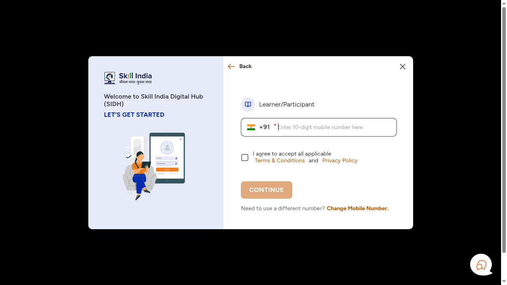
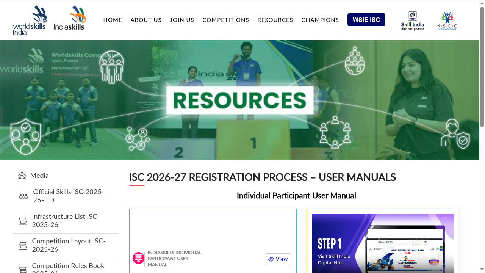

IndiaSkills 2026-27: registration reopened till 19 October, 63 skills from age 16
The Ministry of Skill Development and Entrepreneurship (MSDE) has reopened registration for the IndiaSkills Competition 2026-27 till 19 October 2026, after requests from institutions and aspirants. IndiaSkills is India's national skill championship, run by MSDE with NSDC as the implementation partner, across 63 skills. Registration is on the Skill India Digital Hub (SIDH).
Official publisher artwork hosted by its publisher. Official source. Independent guide, not affiliated or sponsored. Artwork and trademarks belong to their owners.
What is IndiaSkills?
It is the country's biggest skill competition, covering 63 industry-relevant trades: manufacturing, engineering, construction, digital technologies, creative industries and services. You compete through district or zonal rounds, then state, regional and national rounds. National-level winners can progress towards representing India at international skill competitions. About 4 lakh people have already registered for 2026-27, per the ministry.
Who can register?
- Open to Indian nationals; minimum age 16 years
- For most skills: born on or after 1 January 2006
- For 13 skills - including Cyber Security, Cloud Computing, Mechatronics, Industry 4.0, Additive Manufacturing, Digital Construction and Aircraft Maintenance - born on or after 1 January 2003
- No formal qualification is needed; both individual and team skills exist
- Registration on SIDH uses Aadhaar-based e-KYC
Why the buzz now?
Team India finished 10th at WorldSkills Shanghai 2026 with six silver medals and 20 medallions for excellence, its best result yet. The Prime Minister met the team on 9 October 2026, and the ministry says the reopened window follows renewed demand after that.
How to register: step by step
These steps follow the official IndiaSkills 2026-27 participant user manual and the live SIDH pages we opened on 19 October 2026.
- Open skillindiadigital.gov.in/india-skills-competition (or skillindiadigital.gov.in/home). The link takes you straight to the Skill India Digital Hub (SIDH) registration screen.
- Select Learner/Participant, type your 10-digit mobile number, tick the Terms & Conditions box, and tap CONTINUE.
- Enter the OTP sent to that mobile number.
- First-time users: set a 4-digit account password (numbers only), confirm it, and tap CREATE. You will use this password for later logins.
- Complete Aadhaar e-KYC: enter your 12-digit Aadhaar number and verify it with the OTP method. The manual recommends OTP e-KYC for this competition, and e-KYC is mandatory for first-time users.
- After e-KYC, your SIDH account is ready. Open the IndiaSkills banner on the home page, or tap the profile icon and choose My Dashboard, then select IndiaSkills Competition 2026-27.
- Choose Individual Participation and tap Next. (Team skills have a separate team flow.)
- Check your skill's age rule before you fill the form: most of the 63 skills need you born on or after 1 January 2006; 13 skills (including Cyber Security, Cloud Computing, Mechatronics, Industry 4.0, Additive Manufacturing, Digital Construction, ICT Network Infrastructure, Industrial Design Technology, Optoelectronic Technology, Robot Systems Integration, Water Technology, Dental Prosthetics and Aircraft Maintenance) allow born on or after 1 January 2003.
- Fill the form's three sections in order - Personal Details, then Address Details, then Education Qualification/Employment - checking the entries before tapping Next on each.
- Tick the declaration confirming the state you are participating from (your current state of residence), tap CONFIRM, and submit before 19 October 2026.

Steps 3 to 10 happen after mobile sign-in and Aadhaar e-KYC, inside your own account, so we cannot show them as screenshots; the descriptions above are from the official participant user manual. The same manual (with the official screenshots) is on the WorldSkills India site:

Video guides
We searched YouTube on 19 October 2026 for reliable step-by-step registration videos for IndiaSkills 2026-27 in English and in Malayalam. We could not verify one that matches this cycle and the current SIDH portal, so we are not linking any rather than risk sending you to an outdated or unofficial video. If an official NSDC/SIDH walkthrough appears, we will add it here.
We read the PIB release (13 October 2026) and the official IndiaSkills 2026-27 participant user manual on 17 October 2026. The SIDH competition page is JavaScript-rendered, so details there could not be read without sign-in.
Sources: PIB release, 13 October 2026, IndiaSkills 2026-27 user manual (PDF), SIDH registration page, WorldSkills India registration process page. Checked 17 October 2026; apply steps and video search re-checked 19 October 2026. This is an AiCoN explainer, not a government publication.